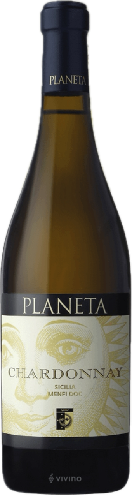
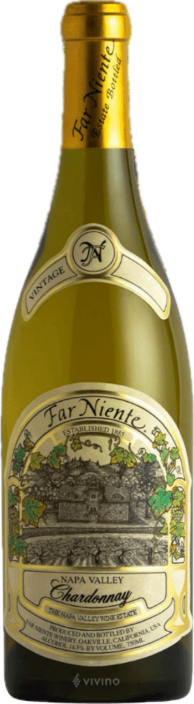
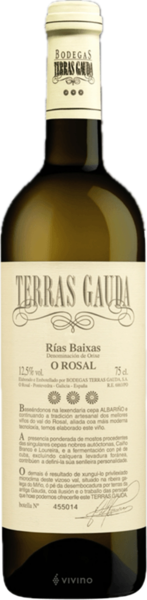
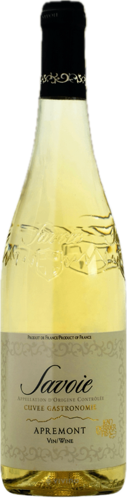

bar Fino Logo Ver2.svg)
-

Planeta chardonnay
Region | Menfi, Italy
Regional style | Southern Italy White
Grapes | Chardonnay
Alcohol | 13.5% -

Far Niente chardonnay
Region | Napa Valley, United States
Regional style | Napa Valley Chardonnay
Grapes | Chardonnay
Alcohol | 14.3%

Terras Gauda O'Rosal
Region | Rias Baixas, Spain
Regional style | Spanish Albarino
Grapes | Albarino
Alcohol | 12.5%

Savoie Cuvee Gastronomie Apremont
Region | Savoie, France
Regional style | French Savoie White
Grapes | Jacquere
Alcohol | 11.5%